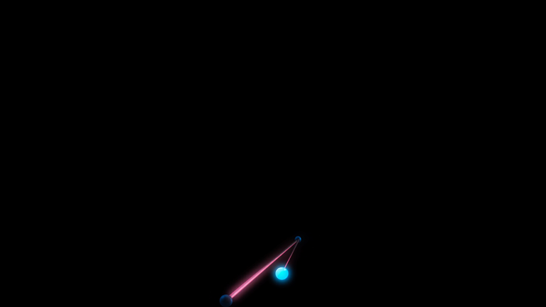
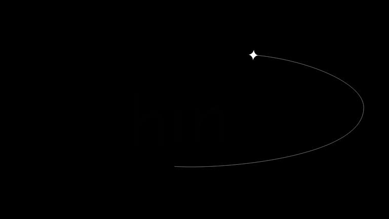

Interactive ASCII Particle Logo
Patterns
- Give the identity the whole stage. Remove navigation, cards, and competing copy from the first viewport.
- Keep atmosphere subordinate. Use only a faint blue-black field; the brightest pixels stay inside the MAIR mark.
- Make motion spatially meaningful. Particles should return to a stable anchor instead of drifting forever.
- Preserve the source color. Retain MAIR's blue-to-cyan gradient rather than reducing it to generic white ASCII.
Proposed composition
+------------------------------------------------------+ | | | .+%#@ MAIR @#%+. | | pointer scatters nearby glyphs | | spring returns them | | | +------------------------------------------------------+
References
One luminous interaction on black


Low-contrast atmosphere
Implementation cross-check
- Interactive Particle Logo demonstrates the image-to-particle Canvas pattern.
- Proper Noun's walkthrough uses a hidden image as the sampling source and a Canvas as the interaction layer.
Applied constraints
- Full viewport, near-black background.
- No third-party rendering or physics library.
- Transparent image bounds cropped before responsive grid sampling.
- Local blue/cyan source color retained per cell.
- Temporary pointer repulsion with spring-damper return.
- A stable reduced-motion treatment.